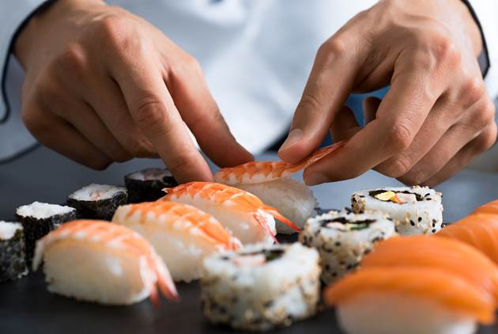
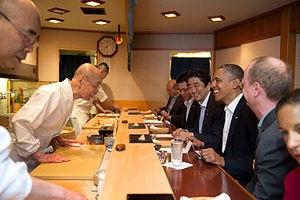
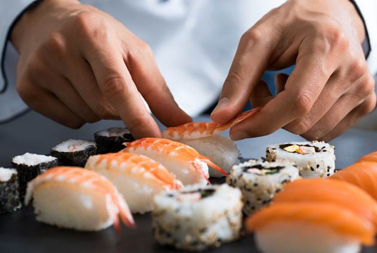
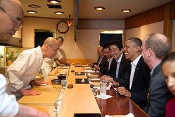
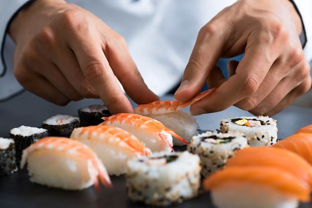
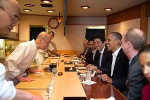
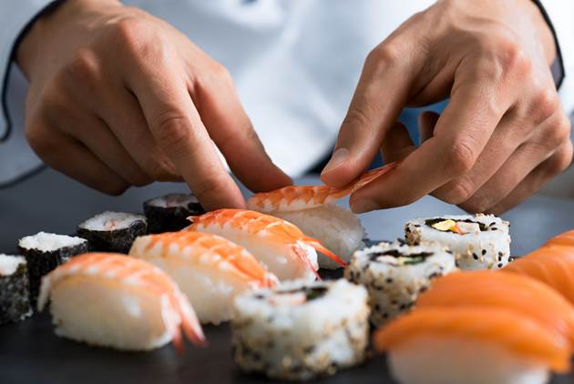
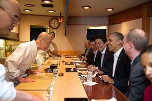

東京銀座地鐵站附近，位於地下室，門廳狹小，木柵欄圍起僅有的10個座位，連廁所都在店外。雖是方寸之地，卻需要提前一個月訂位，一餐僅15分鐘，最低消費3萬日元。
吃過的人都說，這是「值得一生等待的壽司」。
為了保護雙手，二郎在工作之餘都戴著手套，連睡覺也不例外；為了尋覓最優質的食材，他堅持每天親赴魚市場，所有的細節都要過問；鮪魚只從最專業的鮪魚供應商那裡進，蝦也只從蝦店買；壽司專用的醋飯製作時應與體溫一致，也要適應高壓，因此必須選最好的米……
精益求精，換來了供應商的信任。有些米專供二郎的壽司店，因為「只有他知道怎麼煮」；整個魚市場只有3公斤野生蝦，也全部給他，因為「好的東西是有限的，只會留給最好的人」。
紀錄片講述了全球最年長的三星大廚「小野二郎」的傳奇人生和成功背後付出的努力。由David Gelb執導。從日式壽司的經營、人才的培訓、料理的重點、食材的採購、家族的傳承.....。每一部分都有著墨。1個小時22分鐘，帶你了解一家只能供10個客人的小店，最低一餐價個3萬日圓。用餐時間15分鐘的餐廳;跟一位85歲，花了75年都在做壽司的故事。